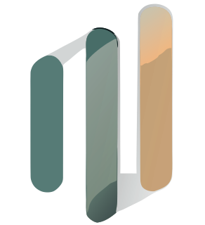
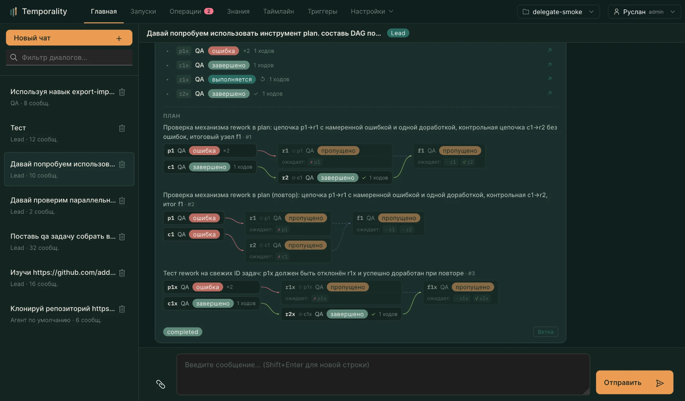

01
Наблюдать
Записывать ход запуска: вызовы модели и инструментов, решения, результаты, вопросы человеку.
EVENT JOURNAL
temporalityTemporality наблюдает, как агент работает, что он узнаёт и чему можно доверять. Проверенный опыт возвращается в следующие задачи — без бесконечной свалки воспоминаний.

Смотрите на реальные рабочие сценарии: диалог с агентом, ход выполнения, происхождение знаний и их жизненный цикл.
Это скриншоты работающего интерфейса, а не перерисованные макеты. Нажмите на изображение, чтобы рассмотреть детали.
Система сохраняет события как первичный источник правды. Знания — производное представление, которое может быть подтверждено, использовано повторно или признано устаревшим.
Записывать ход запуска: вызовы модели и инструментов, решения, результаты, вопросы человеку.
EVENT JOURNALВыделять проверяемые утверждения и связывать каждое с исходным запуском и свидетельствами.
PROVENANCEОтделять гипотезы от подтверждённого опыта. Противоречия и неудачи должны менять статус знания.
LIFECYCLEПодбирать короткие подсказки под новую задачу. При необходимости агент может открыть исходные данные.
CONTEXTUAL HINTSМинимальный путь для первого запуска. Секреты модели хранятся в локальном .env — не в репозитории.
Нужны Git и Docker Compose.
git clone https://github.com/RuslanGabbasov/temporality.git
cd temporalityСкопируйте пример окружения и укажите OpenAI-совместимый API. Подойдут облачный провайдер или локальный Ollama.
cp .env.example .env
# Set TEMPORALITY_MODEL_BASE_URL
# TEMPORALITY_MODEL_ID and API_KEYCompose поднимет PostgreSQL, журнал событий, интерфейс отладки, Temporal и Agent Kernel.
docker compose up --build -dDebugger доступен на порту 3000. Temporal UI — на 8233. Для локальной разработки авторизация выключена, если токены не заданы.
http://localhost:3000http://localhost:8233Temporality разделяет выполнение задач, журнал наблюдений и интерфейс анализа. Это позволяет разбирать прошлые запуски и пересобирать представление знаний без подмены исходной истории.
Temporal workflows · модель · команды агентов · MCP · sandbox · approvals · делегирование
Append-only события · knowledge projection · hint retrieval · bitemporal queries
Чат · трассы · таймлайн опыта · настройки агентов и организации
Посмотрите исходный код, запустите стек и проверьте, как опыт проходит путь от события до следующей задачи.